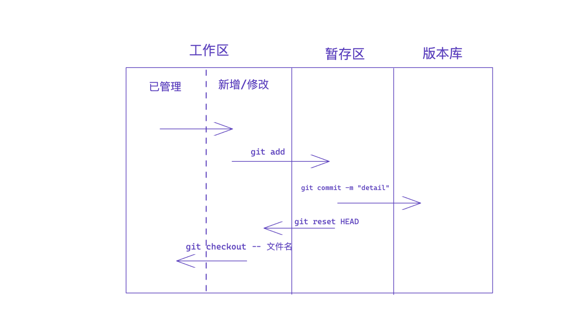
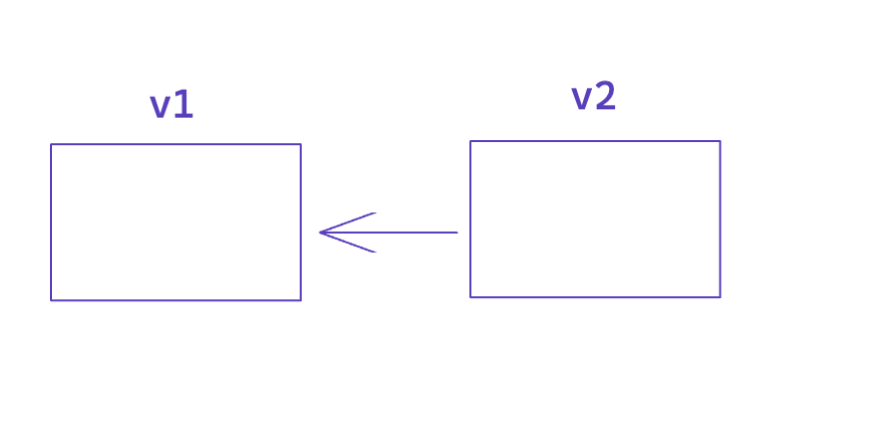

1.关于Git
分布式版本控制软件
1.前戏
个人信息配置
git config --global user.email "you@example.com"
git config --global user.name "Your Name"
1.1 进入文件夹初始化
cd folder
git init
执行两步命令后，git会在folder文件夹中创建一个隐藏文件夹.git
(base) uichuan@wangyichuansMBP learn_git % git init
hint: Using 'master' as the name for the initial branch. This default branch name
hint: is subject to change. To configure the initial branch name to use in all
hint: of your new repositories, which will suppress this warning, call:
hint:
hint: git config --global init.defaultBranch <name>
hint:
hint: Names commonly chosen instead of 'master' are 'main', 'trunk' and
hint: 'development'. The just-created branch can be renamed via this command:
hint:
hint: git branch -m <name>
1.2 文件的状态检查
git status
(base) uichuan@wangyichuansMBP learn_git % git status
On branch master
No commits yet
Untracked files:
(use "git add <file>..." to include in what will be committed)
index.txt
nothing added to commit but untracked files present (use "git add" to track)
1.3 将文件由git管理
git add .
.代表当前文件夹下的所有文件
(base) uichuan@wangyichuansMBP learn_git % git add .
(base) uichuan@wangyichuansMBP learn_git % git status
On branch master
No commits yet
Changes to be committed:
(use "git rm --cached <file>..." to unstage)
new file: index.txt
1.4 提交
git commmit -m "v1"
其中-m后跟随的字符串代表提交是的注释，可以是对当前版本的描述
(base) uichuan@wangyichuansMBP learn_git % git commit -m "v1"
[master (root-commit) 08e6f5f] v1
1 file changed, 2 insertions(+)
create mode 100644 index.txt
总结

1.5 查看提交记录
git log
(base) uichuan@wangyichuansMBP learn_git % git log
commit a7654edb461c503d777b6db0297c8bf9061731e6 (HEAD -> master)
Author: uichuan <uichuan_47@163.com>
Date: Sun Sep 4 18:17:42 2022 +0800
v2
commit 08e6f5f3d62c92692718554251cc53519c00d939
Author: uichuan <uichuan_47@163.com>
Date: Sun Sep 4 18:15:38 2022 +0800
v1
1.6 回滚
git reset --hard version_id
(base) uichuan@wangyichuansMBP learn_git % git reset --hard a7654edb461c503d777b6db0297c8bf9061731e6
HEAD is now at a7654ed v2
1.7 git reflog
查看包括回滚之前的提交记录
(base) uichuan@wangyichuansMBP learn_git % git reflog
a7654ed (HEAD -> master) HEAD@{0}: reset: moving to a7654edb461c503d777b6db0297c8bf9061731e6
12a8a0c HEAD@{1}: commit: 新增约饭功能
a7654ed (HEAD -> master) HEAD@{2}: commit: v2
08e6f5f HEAD@{3}: commit (initial): v1
(base) uichuan@wangyichuansMBP learn_git %
1.8 git checkout
已经修改的文件，但是尚未add到暂存区，希望取消对文件的修改
git checkout -- 文件名
1.9 git reset HEAD
针对已经提交到暂存区的版本
通过
git reset HEAD 文件名
返回到工作区的 新文件/文件变动 状态

2.分支
背景
如果生成的第二个版本相对于第一个版本变化不大
例如：第二个版本在第一个版本的基础上新增了10个文件
那么在生成的第二个版本中，只会存储有变化的部分
其余部分通过一个指针指向之前的版本

2.1 生成新的分支
例如：生成新的分支dev
git branch dev
(base) uichuan@wangyichuansMBP learn_git % git branch
dev
* master
(base) uichuan@wangyichuansMBP learn_git %
切换到dev分支
(base) uichuan@wangyichuansMBP learn_git % git checkout dev
Switched to branch 'dev'
在dev分支写代码，不会影响master分支
dev分支是一个独立的环境
(base) uichuan@wangyichuansMBP learn_git % git status
On branch dev
Changes not staged for commit:
(use "git add <file>..." to update what will be committed)
(use "git restore <file>..." to discard changes in working directory)
modified: index.txt
no changes added to commit (use "git add" and/or "git commit -a")
On branch dev
进行提交
(base) uichuan@wangyichuansMBP learn_git % git add .
(base) uichuan@wangyichuansMBP learn_git % git commit -m "C4"
[dev ea90a75] C4
1 file changed, 2 insertions(+), 1 deletion(-)
查看新分支的提交记录
(base) uichuan@wangyichuansMBP learn_git % git log
commit ea90a751d5d68640e7495c0c2f9ca0a8b1d062ac (HEAD -> dev)
Author: uichuan <uichuan_47@163.com>
Date: Sun Sep 4 23:32:58 2022 +0800
C4
commit 12a8a0ce41b4f9b5ae9112e861f57202d74d2a77 (master)
Author: uichuan <uichuan_47@163.com>
Date: Sun Sep 4 18:52:14 2022 +0800
新增约饭功能
commit a7654edb461c503d777b6db0297c8bf9061731e6
Author: uichuan <uichuan_47@163.com>
Date: Sun Sep 4 18:17:42 2022 +0800
v2
commit 08e6f5f3d62c92692718554251cc53519c00d939
Author: uichuan <uichuan_47@163.com>
Date: Sun Sep 4 18:15:38 2022 +0800
v1
2.2 切换回原来分支
git checkout master
切换回原来分支后，在dev分支中做的修改在master分支中不会出现
分支和分支之间做了代码的隔离
2.3 在另一个分支紧急修复bug
新建分支bug，用于修复
git branch bug
(base) uichuan@wangyichuansMBP learn_git % git branch bug
(base) uichuan@wangyichuansMBP learn_git % git branch
bug
dev
* master
(base) uichuan@wangyichuansMBP learn_git %
2.4 链接修复完的bug分支到master
git merge bug
(base) uichuan@wangyichuansMBP learn_git % git merge bug
Updating 12a8a0c..c17091e
Fast-forward
index.txt | 2 +-
1 file changed, 1 insertion(+), 1 deletion(-)
(base) uichuan@wangyichuansMBP learn_git % git log
commit c17091e02171ae5549e0047754145c9b181daeab (HEAD -> master, bug)
Author: uichuan <uichuan_47@163.com>
Date: Sun Sep 4 23:39:57 2022 +0800
fix bug
链接到master之后，bug分支失去作用
2.5删除bug分支
git branch -d bug
(base) uichuan@wangyichuansMBP learn_git % git branch -d bug
Deleted branch bug (was c17091e).
(base) uichuan@wangyichuansMBP learn_git % git branch
dev
* master
删除之后bug分支消失
2.6 出现冲突的标志
(base) uichuan@wangyichuansMBP learn_git % git merge dev
Auto-merging index.txt
CONFLICT (content): Merge conflict in index.txt
Automatic merge failed; fix conflicts and then commit the result.
2.7 命令总结
-
查看分支
git branch -
创建分支
git branch 分支名称 -
切换分支
git checkout 分支名称 -
分支合并
git merge 要合并的分支在分支合并时，当前需要处在master分支
-
删除分支
git branch -d 分支名称类似于bug修复的分支，在merge到master分支之后
可以选择删除改分支
2.8 工作流
默认分支master （保留正式版本，稳定）
在dev（develop）分支上进行开发